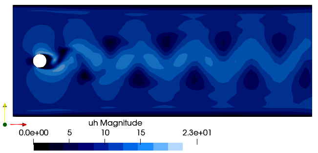

Cylinder

The Cylinder case can be used to see how meshes created in gmsh are manged and to obtain the vortex shedding phenomena. The user has to create a proper mesh in gmsh setting the following physical boundaries:
inletfor the inletoutletfor the outletcylinderfor the cylinder wallslimitsfor the top and bottom boundaries
using PartitionedArrays
using SegregatedVMSSolver
using SegregatedVMSSolver.ParametersDef
using SegregatedVMSSolver.SolverOptions
t0 =0.0
dt = 0.1
tF = 0.5
Re = 100
D = 2
rank_partition = (2,2)
cylinder_mesh_file = joinpath(@__DIR__,"..", "..", "models", "Cylinder_2D.msh")
sprob = StabilizedProblem(SUPG(1))
timep = TimeParameters(t0,dt,tF)
physicalp = PhysicalParameters(Re=Re)
solverp = SolverParameters()
exportp = ExportParameters(printinitial=false,printmodel=false)
meshp= MeshParameters(rank_partition,D,cylinder_mesh_file)
simparams = SimulationParameters(timep,physicalp,solverp,exportp)
mcase = Cylinder(meshp,simparams,sprob)
SegregatedVMSSolver.solve(mcase,backend)